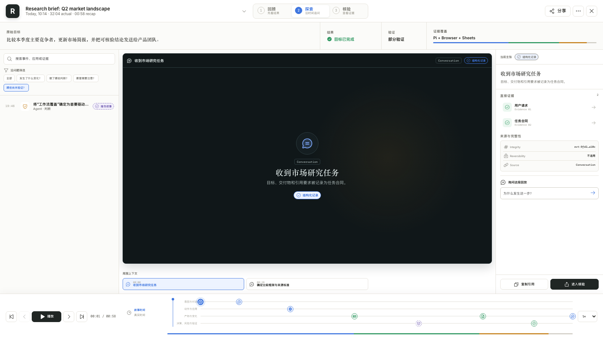
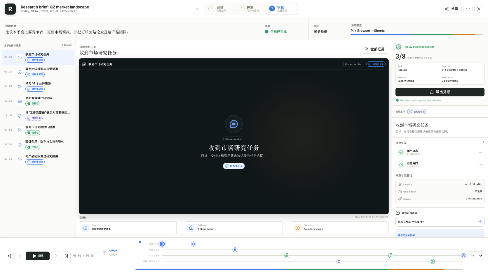
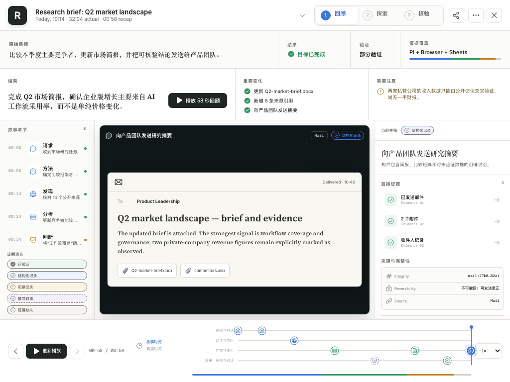
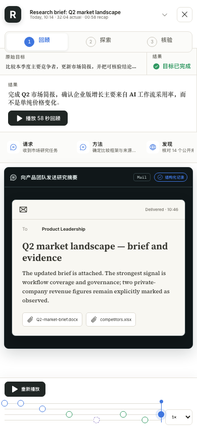

Agent Replay V3：离线原型说明与 QA 图集
原始交互稿使用 Vite + React。此离线页面保留设计决策、QA、源码索引和已经导出的多视口截图，避免打开文档包时依赖 Vite、npm 或网络。
阅读与验收入口
Agent Replay V3 interactive mock · r-codeREADME.htmlAgent Replay V3 — Design QA · r-codedesign-qa.htmlReplay V3 design comparisonqa/comparison.html
保留的实现草图
下列文件是原型的可读实现草图；它们不是运行此离线文档所需的依赖。重构时应将其交互意图、可访问性和失败态转化为正式组件与测试，而不是直接复制。
src/App.jsxsrc/data.jssrc/styles.csssrc/components/Recap.jsxsrc/components/Explore.jsxsrc/components/Verify.jsx
已导出的 QA 视图




